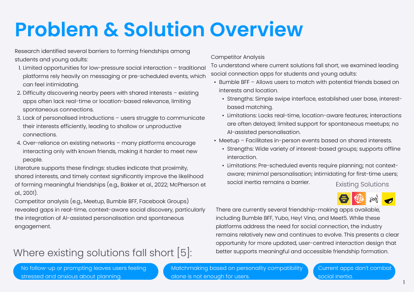
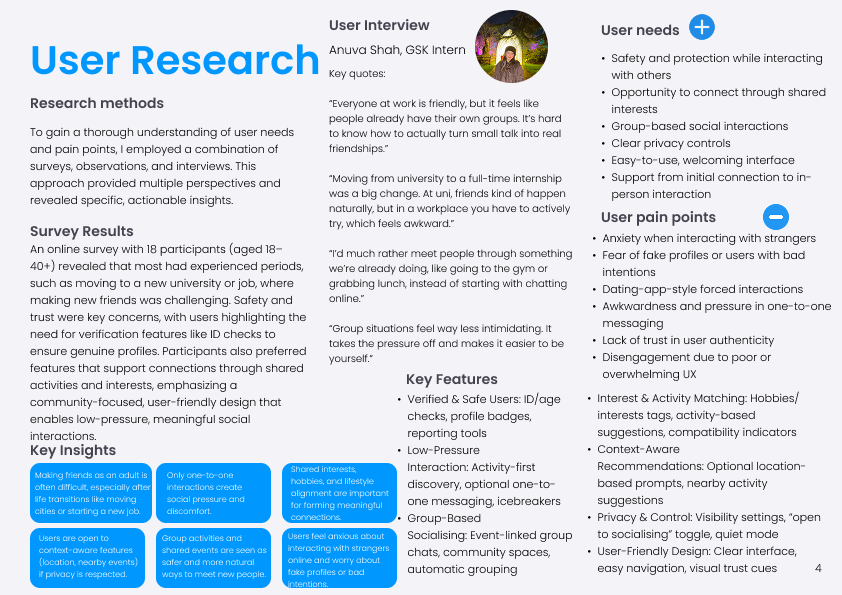
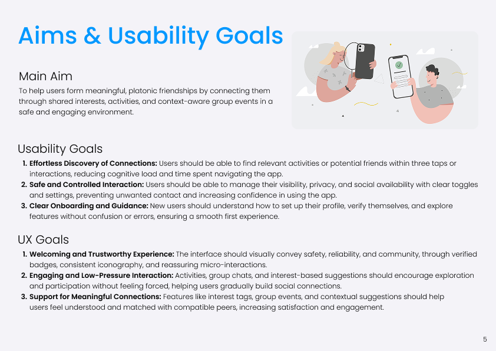
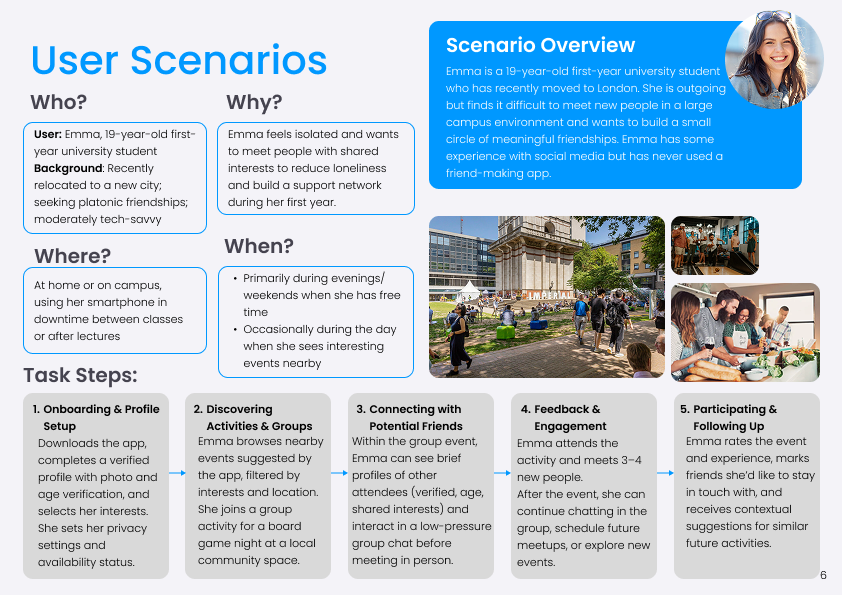
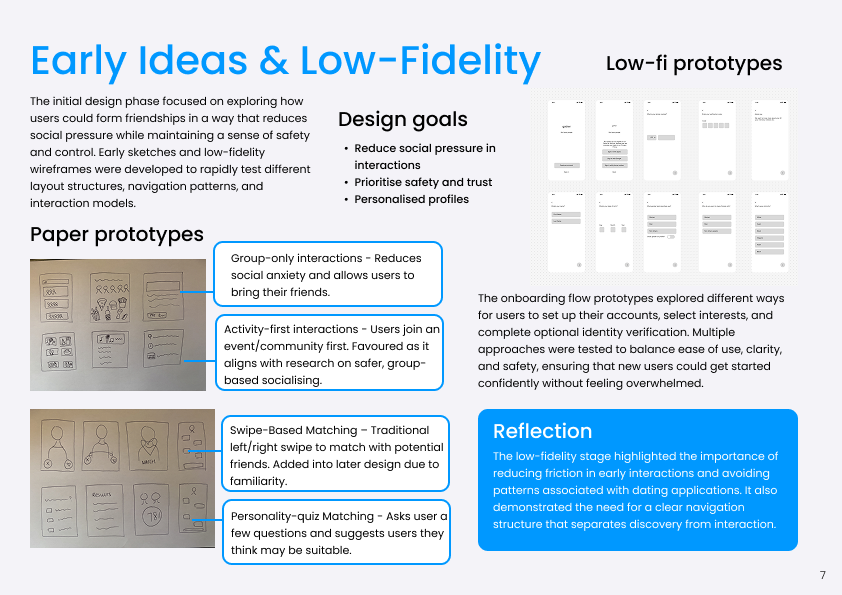
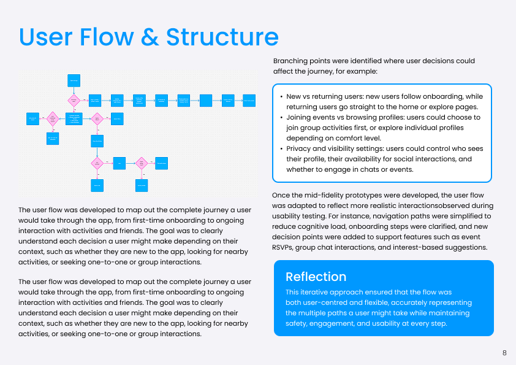
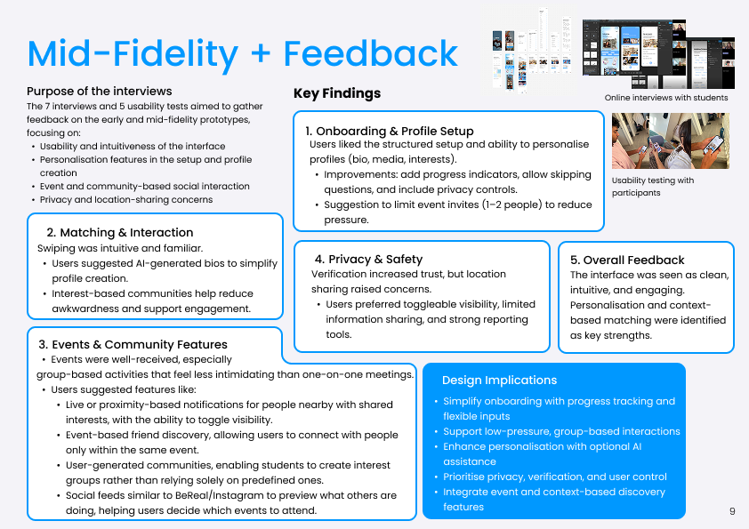
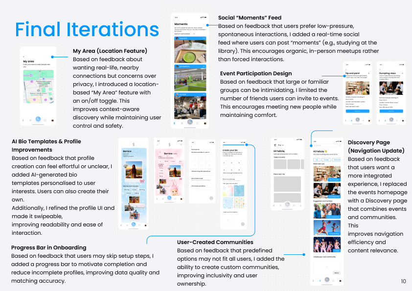
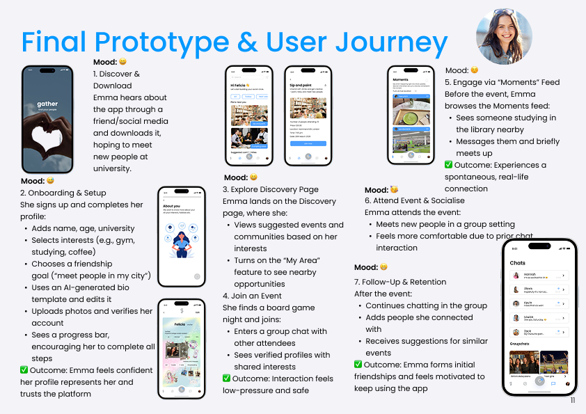

Gather
Social Platform
Overview
Gather was developed for the User Interfaces and Interactions module. The module focuses on human-computer interaction, covering interface design, user journey mapping and prototyping, and asks students to combine user research, iterative prototyping and usability testing in a real project.
Gather is a context-aware social platform that helps students and young adults build real-world friendships effortlessly. Unlike traditional social networks, it focuses on meaningful, timely and location-relevant connections, turning everyday moments into chances to meet new people.

Problem
Our research found that students and young adults struggle to make new friends because existing platforms make spontaneous, low-pressure connection difficult.
- Few low-pressure ways to interact: Traditional platforms rely on messaging or pre-scheduled events, which can feel intimidating.
- Hard to find nearby peers with shared interests: Existing apps often lack real-time or location-based relevance, limiting spontaneous connections.
- No personalised introductions: Users struggle to communicate their interests efficiently, leading to shallow or unproductive connections.
- Over-reliance on existing networks: Many platforms encourage interaction only with known friends, making it harder to meet new people.

Research
User research combined surveys, observations, and interviews to uncover the challenges of making meaningful connections as an adult, highlighting the need for safe, low-pressure, activity-based and group social experiences.

Aims & Usability Goals
The aim was to create a safe, welcoming, and engaging platform that helps users build meaningful platonic friendships through shared interests, activities, and group events.

User Scenarios
To understand how the app could support users in building meaningful friendships, I created a user scenario following Emma, a first-year university student navigating life in a new city. Her journey highlights the importance of safe, low-pressure ways to discover activities, meet like-minded people, and develop lasting connections.

Early Ideas & Low-Fidelity
The early design phase explored how users could build meaningful friendships through safe, low-pressure interactions. I created initial sketches, paper prototypes, and low-fidelity wireframes to test different layouts, navigation patterns, and interaction models before moving into detailed designs.

User Flow & Structure
I mapped the end-to-end user journey, from onboarding and profile creation to discovering activities, joining communities, and maintaining friendships. The flow helped identify key decision points and ensure users could navigate the app in a way that suited their needs and comfort levels.

Mid-Fidelity & User Feedback
I conducted seven online interviews and five usability tests to evaluate the early and mid-fidelity prototypes. The sessions explored onboarding, profile personalisation, event discovery, community interactions, and users’ expectations around privacy and safety.

Final Design Iterations
User feedback guided the final design decisions, helping transform early concepts into a more personalised, flexible, and privacy-conscious social experience.

Final Prototype & User Journey
The final prototype brings together the key research insights and design iterations in a single journey. Following Emma, a student new to London, the experience demonstrates how the app supports friendship-building from initial discovery to real-world interaction and continued engagement.
High-Fidelity Prototypes

Reflection & Evaluation
This project explored how UX design can address the challenges of forming friendships during life transitions, such as starting university or moving to a new city. The final concept prioritises safety, low-pressure interactions, and meaningful connections through shared interests and activities.